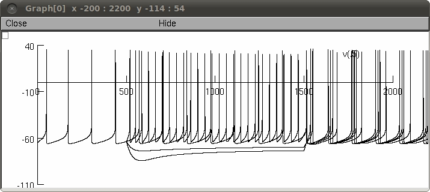

Single compartmental model of a Globus pallidus neuron Tomohiro Fujita, Tomoki Fukai and Katsunori Kitano (2011) "Influences of membrane properties on phase response curve and synchronization stability in a model globus pallidus neuron" Journal of Computational Neuroscience DOI: 10.1007/s10827-011-0368-2 The original model is proposed by Gunay et al.(2008) as a multi-compartmental model. We modified values of ionic conductances so that the single compartmental model shows the similar firing activity to that of the original model. Autolaunch or after building the mod files, run the demo.hoc file. The demo corresponds to Figure 1(a) and (b) in the paper. To generate 1(a) from the Neuron Main Menu select Tools -> Point Processes -> Managers -> Point Group. Change the IClamp delay to 500, duration to 1000 and current to either -.003, 0, .003, .006 nA to correspond to -1, 0, 1, 2 uA/cm2. If on the voltage graph you select Keep lines from the upper left box menu (or right click on the graph), after running with the above values your graph should look similar to: 